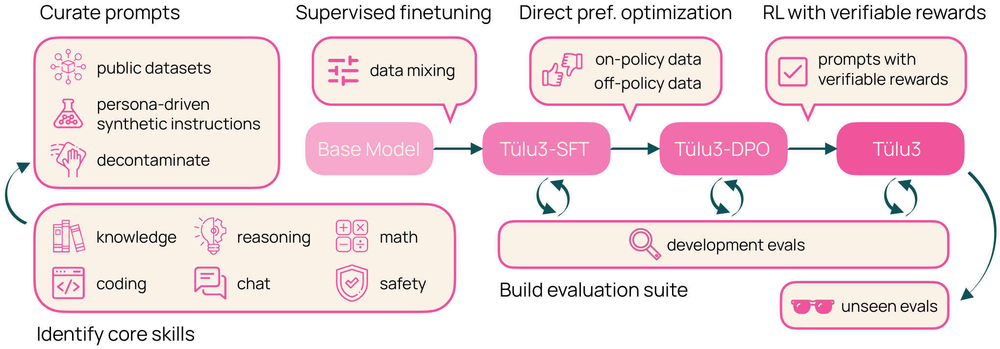

第 7 章 · 后训练数据全景图
预训练把"知识"灌进模型，后训练数据决定这些知识以什么方式、在什么场景下表现出来。本章建立全书第 2 部分的地图：后训练数据的五大分类、规模量级、数据闭环，以及一份可直接用于选型的开源数据集盘点和合规清单。
1. 上限与表现：一个被反复验证的行业共识
后训练领域流传最广的一句话是："模型的能力上限由预训练决定，模型的表现由后训练数据决定。"这句话不是口号，而是有两个可复现的实验证据支撑的结论。
第一个证据来自 InstructGPT：只用了约 1.3 万条人工示范做监督微调（Supervised Fine-Tuning, SFT）的 1.3B 参数模型，在人类偏好评估中的回答质量超过了 175B 的原始 GPT-3。175 倍的参数差距，被几万条高质量后训练数据抹平了——预训练给了 GPT-3 全部知识，但它不知道"怎么好好回答问题"。
第二个证据来自 LIMA：仅用 1,000 条精心筛选（而非生成）的"提示词—回答"对，微调 65B 的 LLaMA，就能得到与 GPT-4 水平接近的回答质量（在其报告的案例评估中）。论文由此提出著名的"浅层对齐假说"（Superficial Alignment Hypothesis），摘要中的原话值得背下来：
"几乎大语言模型的所有知识都是在预训练中习得的；对齐所教的，只是在外部刺激下应该调出哪一个能力子分布。"——Zhou et al., 2023（LIMA, arXiv:2305.11206）
对工程团队来说，这个共识的直接推论是：后训练数据是你手中性价比最高的提升手段。预训练动辄数百万美元，而后训练数据的质量优化常常只花几个工程师几周时间。Magpie 的实验是一个现成的对照：用 Llama-3-70B-Instruct 自动合成的 30 万条指令数据微调 Llama-3-8B-Base，效果可以与 Meta 用约 1,000 万级数据、多阶段流程训练出的官方 Llama-3-8B-Instruct 相当（Xu et al., 2024, arXiv:2406.08464）。同一个底座，不同的后训练数据，市场评价天差地别。
"预训练决定上限"在 2023 年的说法里几乎绝对成立，但推理时代（第 5 部分）修正了它的表述：以 DeepSeek-R1 为代表（arXiv:2501.12948），强化学习确实能扩展模型"可被激发"的能力上限。更准确的表述是：预训练决定知识与潜力的上限；后训练决定这些潜力有多大比例、以何种行为被表现出来；推理强化（RLVR）再往上撬动一截可激发上限——而撬动它的核心资源，依然是数据（高质量的提示词、验证器与轨迹）。所以无论范式怎么变，"数据决定行为"这个命题始终成立，只是数据的形态从示范 answer 变成了 reward 信号与环境反馈。
本节小结：后训练数据不增加模型的知识存量，但它决定模型"表现成什么样"，是同等算力下区分好模型与平庸模型的第一变量。
2. 后训练数据五大类：一张图看懂
后训练数据不是一种东西，而是五种服务于不同训练阶段、有着完全不同构造逻辑的数据。本书第 2 部分到第 6 部分正是沿着这条分类展开的。图 7-1 给出全景：每一类数据从哪里来、典型规模是多大、喂给哪个训练阶段。
几点阅读这张图的提示。其一，规模量级差异巨大：安全数据可能只有几千条就能起作用（拒答行为很好学），而推理数据动辄千万级（OpenR1-Math-220k 一家就是 22 万题、NuminaMath 86 万题，第 30 章的蒸馏数据更大）。其二，来源高度重叠：同一个强模型既在生成指令数据、也在给偏好数据打分、还在蒸馏推理数据，所以"数据供应商"其实是同一批基础设施。其三，类别正在融合：一条带工具调用轨迹的对话，既是智能体数据也可以带 per-turn 偏好标注；Tulu 3 的 RLVR 既是训练阶段也是数据构造方法（用可验证奖励筛选）。不要教条地维护五条流水线，而要维护一个统一的"数据池 + 按用途打标签"。
这张图还有一个预算视角的读法。如果你只有一个人月与几千元预算，顺序应当是：先做指令数据（SFT 是一切的地基，第 12 章），再做安全数据（几千条拒答样本就能显著改善体感），偏好数据放第三（DPO 用几千对高质量 pair 就能起效），推理与智能体数据最后——它们需要验证器与环境的基建投入，不适合裸起步。反之，如果你的基座模型已经很强（比如近期发布的开源旗舰底座），指令数据的边际收益会下降，偏好与推理数据的优先级应当前移。数据预算分配没有万能公式，但它永远是"基座能力 × 产品目标"的函数，而不是"别人有什么我也要有"的清单。
本节小结：五大类数据对应五条构造逻辑，规模从千级到千万级，工程上应统一数据池、按用途打标签，而不是建五套烟囱；预算分配跟着基座能力与产品目标走。
3. 数据规模的感觉：从 52K 到千万级
讨论后训练数据时，工程师最容易犯的错误是用预训练的直觉（10T token 起步）来想象后训练（几万条样本）。建立"量级感觉"的最快方式，是看这条时间线上的标志性数据集：2022 年 Alpaca 用 5.2 万条就掀起了复现浪潮；2023 年 ShareGPT、UltraChat 把真实多轮对话推到几十万段；2024 年 Tulu 3 用 93.9 万条精心配比的混合数据把开源 SFT 推到新的水位。表 7-1 按四个阶段整理了这条曲线。
| 阶段 | 代表数据集 | 规模 | 构造方式 | 关键启示 |
|---|---|---|---|---|
| 人工精标期（2021-2022） | InstructGPT SFT / FLAN v2 / Dolly-15k | 1.3 万示范 / 1,836 任务 / 1.5 万条 | 人工撰写示范 / 任务式混合 / 员工众包 | 少量高质量数据即可显著改变行为 |
| 自指令蒸馏期（2023 上） | Alpaca（52K）/ Self-Instruct（52K 指令、82K 实例） | 5 万级 | text-davinci-003 自指令生成，成本低于 500 美元 | 合成数据的杠杆比首次超过人工标注 |
| 真实对话与规模化期（2023 下） | ShareGPT / UltraChat / OpenHermes-2.5 | 数万段 ~ 100 万条 | 真实用户日志爬取 / 模拟对话生成 / 多源汇编 | 多轮、多样、贴近真实分布开始成为重点 |
| 精配比现代期（2024-） | Tulu 3 SFT mix（939,343 条）/ LIMA（1,000 条，对照路线） | 百万级（或极致精选千级） | persona 驱动合成 + 多源清洗配比 + 去污染 | 配比、去污染与质量分层比堆数量更重要 |
三个量级感受。第一，5 万条后训练数据只有几百 MB 文本，和预训练的 10T token 相差近十个数量级——所以后训练数据可以（也应该）被人工逐条抽查，这在预训练里不可想象。第二，规模的边际收益很快：从 1,000 条到 10 万条的提升远大于从 100 万条到 1,000 万条；LIMA 论文甚至认为 1,000 条足够"教会表达"，缺的是覆盖度而非数量。第三，规模数字必须连着质量口径看："52K"和"100 万"没有可比性，前者是经过 ROUGE-L 去重与人工抽查的指令，后者可能混入了大量低质模板化内容。看到任何数据集，先问：这是多少条有效样本？
本节小结：后训练数据的量级是 1 千 ~ 1,000 万条，规模曲线在百万级附近收益递减，质量与配比从此取代数量成为主要矛盾。
4. 数据闭环：采集 → 标注 → 清洗 → 训练 → 评测 → 回流
把数据当一次性工程（攒一批、训一版、结束）是团队最常见的失败模式。成熟的后训练是一个闭环系统，图 7-2 的六个环节缺一不可，而且价值集中在"回流"这个多数团队没有的环节。
逐环节说要点。采集：三条来源——真实用户日志（注意知情同意与第 6 节的隐私合规）、开源数据（第 5 节）、合成生成（第 8、11 章）。标注：指令数据与偏好数据的标注方法论完全不同，分别是第 8 章和第 9 章的主题。清洗：去重、去污染（从训练集剔除与评测基准重叠的样本）、PII 脱敏，详见第 10 章。训练：数据形态决定训练阶段——指令数据进 SFT（第 12 章），偏好数据进奖励模型或 DPO（第 19、22 章）。评测：基准分数只能告诉你"哪里平均不行"，人工分析和红队才能告诉你"具体哪类请求不行"。回流：把评测暴露的 badcase 结构化（错误类型、触发模式），转化为下一轮的采集需求与标注规范修订。
图 7-3 是 Tulu 3 的后训练管线，注意它的三阶段（SFT → DPO → RLVR）各自有独立的数据混合与去污染流程——闭环不是抽象概念，它在现代配方里是按阶段显式组织的。

如果资源只够做一件事，选择搭"评测 → 回流"通道而不是把数据量翻十倍。一个能稳定归因 badcase 的闭环，三个月后的数据资产质量会超过一次性堆出来的百万级混合体；反过来，没有回流的大数据集只会把同样的错误放大。
本节小结：后训练数据是闭环而非一次性资产，评测与回流环节决定了迭代速度，值得优先投入。
5. 开源数据集盘点：可白嫖的主力军
从零标注适合建立差异化能力，但起步阶段 80% 的数据应该来自开源数据集。表 7-2 按类别盘点本书涉及的主力数据集，规模、语言、许可证均以其 Hugging Face 卡面与对应论文为准（数字为撰写时口径，使用前请以卡面为准复核）。选型顺序建议：先查许可证是否允许你的用途，再看语言覆盖，再看构造方式与你的目标是否匹配。
| 类别 | 数据集 | 规模 | 语言 | 许可证 | 构造方式与出处 |
|---|---|---|---|---|---|
| 指令类 | Alpaca | 52K 条 | 英文 | CC BY-NC 4.0 | text-davinci-003 自指令生成，成本低于 500 美元（Taori et al., 2023，斯坦福，GitHub） |
| Evol-Instruct（evol_instruct_70k） | 7 万条 | 英文 | Apache 2.0（衍生自 Alpaca，商用需注意继承条款） | 从 Alpaca 52K 用深度/宽度演化算子升级复杂度（Xu et al., 2023, arXiv:2304.12244） | |
| Magpie-Pro-300K-Filtered | 30 万条 | 英文为主 | 以卡面为准（生成于 Llama-3-70B-Instruct，受其社区许可约束） | 对齐模型空模板采样 400 万条指令后过滤（Xu et al., 2024, arXiv:2406.08464） | |
| Tulu 3 SFT mix | 939,343 条 | 70+ 语言 | ODC-BY | persona 驱动合成 + 多源精选配比 + 去污染（Lambert et al., 2024, arXiv:2411.15124） | |
| OpenHermes-2.5 | 约 100 万条 | 英文为主 | 未声明统一许可（子集各异，默认研究用途） | GPT-4 蒸馏多源汇编：glaive-code 18 万、CamelAI 7.8 万、MetaMath 5.6 万等（teknium, HF） | |
| 多轮对话类 | UltraChat / UltraChat_200k | 论文报告 150 万段（常用 20 万段子集） | 英文 | CC BY-NC 4.0 | 双模型角色扮演模拟多轮对话，无真实用户查询（Ding et al., 2023, arXiv:2305.14233） |
| OASST1 | 161,443 条消息 / 1 万+ 对话树 | 35 语言 | Apache 2.0 | 13,500+ 志愿者人工撰写与评分（Köpf et al., 2023, arXiv:2304.07327） | |
| 偏好类 | HH-RLHF | 约 16.9 万对（169,352 行） | 英文 | MIT | 人工两两比较，有用/无害双轴（Bai et al., 2022, arXiv:2204.05862） |
| UltraFeedback | 6.4 万 prompt × 4 回答 | 英文 | MIT | GPT-4 对每个回答按 4 维度打分，可派生 pair（Cui et al., 2023, arXiv:2310.01377） | |
| OffsetBias | 约 8.5K 对 | 英文 | BSD-3-Clause | 构造仅差"表面因素"的偏好对，用于训练去偏评审器（Park et al., 2024, arXiv:2407.06551） | |
| 推理类 | OpenR1-Math-220k | 22 万题（含长思维链） | 英文/多语 | Apache 2.0 | 以 NuminaMath 1.5 题目为种子，DeepSeek-R1 生成经验证的推理轨迹（open-r1, HF） |
| NuminaMath-CoT | 约 86 万题 | 英文/中文混合 | Apache 2.0 | 竞赛数学题库汇编（cn_k12、olympiads、amc_aime 等）并统一为 CoT 格式（project-numina, GitHub） | |
| 安全类 | BeaverTails | 364,170 条 QA（330K + 30K 评测） | 英文 | CC BY-NC 4.0 | 人工双标注：14 类危害类别 + is_safe 二值标签（Ji et al., 2023, arXiv:2307.04657） |
还要指出表 7-2 的一个空白：没有一个中文主力数据集。中文团队几乎不可能只靠这张表完成 SFT——COIG、BELLE 等中文项目规模与质量都无法与 Tulu 3 这种量级的精配比混合体直接对标。现实的路径是"英文开源打底 + 中文原生补齐 + 自己的业务种子"，中文部分如何构建是第 8 章第 8 节的主题；这里只需记住结论：中文指令与偏好数据，基本都得自建。
OpenHermes 这类多源汇编包含大量风格冲突、难度悬殊、质量参差的子集，直接全量 SFT 往往不如按目标精选 10 万条 + 自己的种子数据 1 万条。正确姿势是：把开源数据当"原料库"，先做质量分层（第 10 章）与去污染，再按自己的任务配比混合。Tulu 3 论文明确强调其对基准做了系统性去污染（decontamination），这是现代配方的标配，不是可选项。
本节小结：开源数据足以覆盖起步阶段的 80% 需求，选型先看许可证、再看语言与构造方式，混合体必须分层与去污染后使用。
6. 隐私与许可证合规：两颗必须排掉的雷
6.1 PII：训练数据会背下来，也会说出来
个人身份信息（Personally Identifiable Information, PII）问题的严重性来自两个已证实的机制。其一是记忆与提取：Carlini 等人证明可以从语言模型中提取出训练数据原文，包括姓名、邮箱、电话（arXiv:2012.07805）；其二是去重降低记忆：重复出现的样本被记忆的概率显著更高，而去重能把可提取的记忆减少一个数量级（Carlini et al., arXiv:2107.06499）。这意味着：含 PII 的用户日志直接进训练集，等于把用户的隐私压进模型权重，任何下游用户都可能通过诱导提问把它挖出来。
工程上的防线是三层：正则与词典规则（手机号、邮箱、身份证，成本低、召回高误报也高）、NER/专用工具兜底（如 Microsoft Presidio，识别人名、地址等上下文实体）、人工抽检（5% 双人独立抽检，保证清洗管道本身被监督）。下面的脚本给出第一层的最小实现。
import re, hashlib
PATTERNS = {
"EMAIL": re.compile(r"[\w.+-]+@[\w-]+\.[\w.]+"),
"PHONE": re.compile(r"(?<!\d)1[3-9]\d{9}(?!\d)"), # 中国大陆手机号
"IDCARD": re.compile(r"(?<!\d)\d{17}[\dXx](?!\d)"), # 身份证号
"BANK": re.compile(r"(?<!\d)[3-6]\d{15,18}(?!\d)"), # 常见银行卡位
"IP": re.compile(r"\b(?:\d{1,3}\.){3}\d{1,3}\b"),
}
def pseudonymize(text: str, key: str = "cookbook-salt") -> str:
"""把 PII 替换为稳定假名：同一实体映射到同一 token，保留对话一致性。
注意：正则只是第一层，人名/地址等实体建议再用 NER（如 Presidio）兜底。"""
for name, pat in PATTERNS.items():
def repl(m, name=name):
digest = hashlib.sha1((key + m.group()).encode()).hexdigest()[:8]
return f"[{name}_{digest}]"
text = pat.sub(repl, text)
return text
raw = "您好，我是张三，手机 13812345678，邮箱 zhangsan@example.com，发票寄到中关村大街 1 号。"
print(pseudonymize(raw))
# 您好，我是张三，手机 [PHONE_3f2a... ]，邮箱 [EMAIL_8c1d... ]，发票寄到中关村大街 1 号。
# "张三"这类姓名正则抓不住 —— 必须接 NER 层，且清洗后仍需人工抽检。6.2 许可证传染：整库只能按最严格的那张证分发
后训练数据几乎总是"多源混合"，而混合的许可证规则是木桶效应：整库对外的许可上限等于最严格的那一个来源。三种典型传染路径需要警惕。其一，非商用条款：Alpaca 数据为 CC BY-NC 4.0，UltraChat 为 CC BY-NC 4.0，BeaverTails 亦为 CC BY-NC 4.0——把它们混进数据，整个数据集就只能非商用。其二，上游模型条款：用 Llama 系列生成的合成数据，受 Meta Llama 社区许可约束；用 GPT-4 生成的数据，名义上受 OpenAI 使用条款中"不得用输出训练竞争模型"的约束——这是 Alpaca 只能标非商用的真实原因。其三，copyleft 同化：CC BY-SA 类内容要求衍生作品以同许可证分发，混入后你的衍生数据集（甚至有人主张包括模型权重）可能被要求同样开源——模型权重是否构成"衍生作品"在法律上并无定论，商用产品务必咨询法务。
这不是小概率风险。Data Provenance Initiative 对 1,800+ 个公开文本数据集的审计发现：主流托管站点上许可证缺失率超过 70%、标注错误率超过 50%（Longpre et al., 2023, arXiv:2310.16787）。也就是说，"卡面上写的许可证"本身就需要核验。下面的清单脚本把"来源—许可证—商用权限"登记成一个 manifest，让传染在混库之前就暴露出来。
import json
# 混合数据集的“许可证清单”：每个来源登记许可证与商用权限，混库前先过一遍
MANIFEST = {
"alpaca-52k": {"license": "cc-by-nc-4.0", "commercial": False},
"ultrachat-200k": {"license": "cc-by-nc-4.0", "commercial": False},
"tulu-3-sft-mix": {"license": "odc-by", "commercial": True},
"evol-instruct-70k": {"license": "apache-2.0", "commercial": True,
"note": "derived-from-alpaca"}, # 继承风险：上游是 NC
"wiki-derived": {"license": "cc-by-sa-3.0", "commercial": True,
"copyleft": True},
}
COMMERCIAL_OK = {"apache-2.0", "mit", "cc-by-4.0", "odc-by", "bsd-3-clause"}
COPYLEFT = {"cc-by-sa-3.0", "cc-by-sa-4.0", "gpl-3.0"}
def audit(manifest: dict) -> list:
problems = []
strictest_ok = all(m["commercial"] for m in manifest.values())
for name, meta in manifest.items():
lic = meta["license"]
if not strictest_ok and meta["commercial"]:
problems.append(f"[木桶] {name}: 库中存在 NC 来源，整库对外只能非商用")
if lic not in COMMERCIAL_OK and meta["commercial"]:
problems.append(f"[存疑] {name}（{lic}）: 许可证商用口径需法务确认")
if "derived-from" in meta.get("note", ""):
problems.append(f"[传染] {name}: 衍生自 NC 数据，Apache 标签不可全信")
if lic in COPYLEFT:
problems.append(f"[同化] {name}（{lic}）: 衍生物可能须同许可证分发")
return problems
if __name__ == "__main__":
for p in audit(MANIFEST):
print(p)如果你的模型要商用，训练数据里不要混入任何 CC BY-NC / 研究专用来源——包括"只占 2% 应该没事"的侥幸混入。整库许可按最严格来源计算，事后剔除既难审计也难自证。正确的流程是：先定商用/研究口径，再按白名单选数据源，manifest 与数据一起进版本管理。
本节小结：PII 靠"正则 + NER + 抽检"三层防线，许可证靠"manifest 白名单 + 最严格来源定整库口径"，两件事都要在训练之前完成，没有事后补救。
7. 数据卡片：把数据当软件项目管理
三个月后，没有人记得 v3 数据集里 12 万条样本是哪来的、洗过几遍、混了哪些来源——除非你写了数据卡片（Data Card）。这个实践来自 Gebru 等人的 Datasheets for Datasets（arXiv:1803.09010）：每个数据集附带一份标准化文档，回答"动机、构成、采集过程、清洗过程、已知问题、维护计划"六组问题。它看似是文档工作，实际解决的是三个工程问题：可复现（新成员能重建整个数据管道）、可审计（法务与安全团队能核查合规口径）、可回归（数据版本与模型效果能对上号）。
表 7-3 给出后训练数据卡片的最小字段集，下面的 YAML 是一个可直接抄进仓库的模板。
| 字段组 | 必填字段 | 回答的问题 |
|---|---|---|
| 标识 | name、version、date、size、languages、license | 这是谁？能用在什么场景？ |
| 来源 | 每个来源的 origin、license、proportion | 数据从哪来？许可证传染了吗？ |
| 采集 | collector（人工/模型/日志）、时间范围、同意机制 | 谁在什么授权下生产了它？ |
| 清洗 | 去重阈值、去污染范围、PII 流程、质量门禁与通过率 | 进训练集前经历了什么？ |
| 已知问题 | 覆盖缺口、偏差风险、禁用场景 | 用的时候要提防什么？ |
| 维护 | owner、更新节奏、关联的评测结果 | 坏了找谁？下次怎么改？ |
# 与数据一起提交到版本库；每次改动 bump version
dataset:
name: my_sft_mix_v1
version: 1.0.0
created: 2026-08-30
size: 120000 # 样本数（有效样本，去重后）
languages: [zh, en]
license: cc-by-nc-4.0 # 整库口径 = 最严格来源（ultrachat 传染所致）
sources:
- id: human_seed
origin: human-written # 内部标注，12 人团队
license: internal
proportion: 0.08
- id: open_mix
origin: tulu-3-sft-mixture + ultrachat_200k
license: see-upstream # ODC-BY + CC BY-NC 混合
proportion: 0.72
- id: llm_synth
origin: Qwen2.5-72B-Instruct 生成，规则+LLM 打分过滤
license: see-upstream # 受生成模型条款约束
proportion: 0.20
collection:
pii_scrub: regex + NER 双层，5% 双人抽检通过
cleaning:
dedup: minhash, jaccard 0.85
decontamination: 与 MMLU / GSM8K / IFEval 测试集做 10-gram 匹配剔除
quality_gate: LLM judge 打分不低于 7/10，通过率 78%
known_issues:
- 数学类仅占 6%，GSM8K 风格覆盖不足，v2 计划补充
- 含 NC 来源，整库禁止商用；商用版需替换 ultrachat 为 OASST1
maintenance:
owner: data-team
review_cadence: 每两周，随评测 badcase 回流更新在卡片里加一栏"该版本数据训练出的模型在哪次评测中的表现"，让数据版本与模型效果一一对应。当 v1.2 数据训出的模型数学分数暴涨时，你能立刻定位是哪个来源的改动起了作用——这是消融实验之外最便宜的数据归因手段。
本节小结：数据卡片是数据工程的"代码注释"，用六组字段换取可复现、可审计、可归因，成本一次、收益长期。
8. 本章小结
- 核心共识："预训练决定上限，后训练数据决定表现"有 InstructGPT（1.3B 胜 175B）与 LIMA（1,000 条微调 65B）两个可复现证据；推理时代修正为"RL 可扩展可激发上限"，但决定行为的仍是数据。
- 五大类数据：指令、偏好、推理、智能体、安全，规模从千级到千万级，来源高度重叠；工程上应统一数据池、按用途打标签。
- 量级感觉：后训练数据是 1 千 ~ 1,000 万条的量级，比预训练小十个数量级，可以也应该逐条人审；百万级之后收益递减，质量与配比成为主要矛盾。
- 数据闭环：采集 → 标注 → 清洗 → 训练 → 评测 → 回流，价值集中在评测与回流；先搭回流通道，再扩数据规模。
- 开源盘点：Alpaca、Evol-Instruct、Magpie、Tulu 3 mix、OpenHermes（指令）；HH-RLHF、UltraFeedback、OffsetBias（偏好）；OpenR1-Math、NuminaMath（推理）；BeaverTails（安全）。选型先看许可证与语言，混合体必须分层与去污染。
- 合规两条线：PII 用"正则 + NER + 抽检"三层防线；许可证按最严格来源定整库口径，商用口径下 NC 与研究专用数据一票否决。
- 数据卡片：标识、来源、采集、清洗、已知问题、维护六组字段，让数据资产可复现、可审计、可归因。
接下来两章深入第一大类：第 8 章 · 指令数据构建拆解 Self-Instruct、Evol-Instruct 与 Magpie 三大合成范式及质量过滤流水线；第 9 章 · 偏好数据构建讲清偏好对从哪来、怎么标、有哪些系统性偏差。
问题 1："预训练决定上限、后训练决定表现"这句话的两个实验证据是什么？它在推理时代需要如何修正？
证据一：InstructGPT 用约 1.3 万条人工示范做 SFT 的 1.3B 模型，在人类偏好评估中胜过 175B GPT-3（arXiv:2203.02155）。证据二：LIMA 用 1,000 条精选样本微调 65B LLaMA 即获得高质量回答，据此提出浅层对齐假说——几乎所有知识在预训练中习得（arXiv:2305.11206）。修正：DeepSeek-R1 等工作表明强化学习能扩展模型"可被激发"的能力上限，因此更准确的表述是"预训练决定知识与潜力上限，后训练决定潜力以何种行为、多大比例表现，推理强化再上撬一截"——而这三者的核心资源仍然是数据（arXiv:2501.12948）。
问题 2：你的商用项目想混入 Alpaca（CC BY-NC 4.0）和 UltraChat（CC BY-NC 4.0）各占 5%，其余为 Apache-2.0 数据。这样可行吗？
不可行。多源混合的许可证按"最严格来源"定整库口径：只要存在 NC 来源，整个数据集对外就只能非商用，即使它只占 5%。此外 Alpaca 的输出来自 text-davinci-003，还叠加 OpenAI 使用条款的竞争性限制；正确做法是商用口径下把这两个来源替换为 Apache-2.0 / MIT / ODC-BY 等宽松许可的数据（如 OASST1、Tulu 3 mix），并用 manifest 登记来源—许可证映射以便审计。
问题 3：数据闭环六个环节中，哪一个最常被忽视？为什么它反而应该优先投入？
最常被忽视的是"评测 → 回流"环节：多数团队攒一批数据、训一版模型就结束，评测分数好坏不知道原因。回流通道把评测暴露的 badcase 结构化（错误类型、触发模式），转化为下一轮的采集需求与标注规范修订，使数据资产随迭代持续变好。资源有限时应优先搭回流而不是扩规模——有回流的 10 万条会在三个月内胜过无回流的 100 万条。
问题 4：LIMA 只用 1,000 条，Tulu 3 用了 93.9 万条，两条路线矛盾吗？你该学谁？
不矛盾，它们回答的问题不同。LIMA 证明的是"教会模型得体地表达所需的数据极少"，其前提是 LLaMA-65B 的预训练足够强、且 1,000 条经过极致人工精选；Tulu 3 的 93.9 万条追求的是覆盖度——多任务、多语言、多难度、多格式，且其中大量数据同样是高质量精选与配比的产物。实践答案取决于你的基座与目标：强基座 + 窄场景可走小而精路线；要泛化能力与多任务覆盖则走配比混合路线。共同点是：质量分层、去污染、配比设计在两条路线上都不可省略。
参考文献
- [Ouyang+, 2022] Ouyang, L. et al. "Training language models to follow instructions with human feedback." NeurIPS, 2022. arXiv:2203.02155
- [Zhou+, 2023] Zhou, C. et al. "LIMA: Less Is More for Alignment." NeurIPS, 2023. arXiv:2305.11206
- [Wang+, 2023] Wang, Y. et al. "Self-Instruct: Aligning Language Models with Self-Generated Instructions." ACL, 2023. arXiv:2212.10560
- [Chung+, 2022] Chung, H. W. et al. "Scaling Instruction-Finetuned Language Models." 2022. arXiv:2210.11416
- [Taori+, 2023] Taori, R. et al. "Stanford Alpaca: An Instruction-following LLaMA Model." GitHub / Stanford CRFM Blog, 2023.（数据许可证 CC BY-NC 4.0 见 HF 卡面 tatsu-lab/alpaca）
- [Xu+, 2024] Xu, Z. et al. "Magpie: Alignment Data Synthesis from Scratch by Prompting Aligned LLMs with Nothing." ICLR, 2025. arXiv:2406.08464
- [Lambert+, 2024] Lambert, N. et al. "Tulu 3: Pushing Frontiers in Open Language Model Post-Training." 2024. arXiv:2411.15124
- [Ding+, 2023] Ding, N. et al. "Enhancing Chat Language Models by Scaling High-quality Instructional Conversations." EMNLP Findings, 2023. arXiv:2305.14233
- [Köpf+, 2023] Köpf, A. et al. "OpenAssistant Conversations — Democratizing Large Language Model Alignment." NeurIPS Datasets and Benchmarks, 2023. arXiv:2304.07327
- [Bai+, 2022] Bai, Y. et al. "Training a Helpful and Harmless Assistant with Reinforcement Learning from Human Feedback." 2022. arXiv:2204.05862
- [Cui+, 2023] Cui, G. et al. "UltraFeedback: Boosting Language Models with High-quality Feedback." 2023. arXiv:2310.01377
- [Ji+, 2023] Ji, J. et al. "BeaverTails: Towards Improved Safety Alignment of LLM via a Human-Preference Dataset." NeurIPS Datasets and Benchmarks, 2023. arXiv:2307.04657
- [Gebru+, 2021] Gebru, T. et al. "Datasheets for Datasets." Communications of the ACM, 2021. arXiv:1803.09010
- [Longpre+, 2023] Longpre, S. et al. "The Data Provenance Initiative: A Large Scale Audit of Dataset Licensing & Attribution in AI." 2023. arXiv:2310.16787
- [Carlini+, 2021] Carlini, N. et al. "Deduplicating Training Data Makes Language Models Better." ACL, 2021. arXiv:2107.06499
- [DeepSeek-AI, 2025] DeepSeek-AI. "DeepSeek-R1: Incentivizing Reasoning Capability in LLMs via Reinforcement Learning." 2025. arXiv:2501.12948